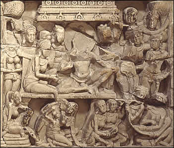

Siddhartha in the harem
Prince Siddhartha grew up enjoying a life of leisure in his father's palace. He gave up this life in order to pursue a greater spiritual understanding and to explore the nature of suffering in the world. This scene shows Prince Siddhartha sitting on a throne in the harem. Sitting next to him is a woman who may be his wife Yashodhara. The rest of the people in the scene are probably female attendants. |